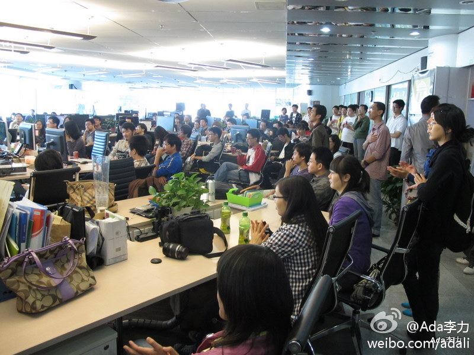

最受不了表扬了, 你的电台节目一定会支持. [呵呵] //@cleverpig：我最爱 @Ada李力 的这类谈话，国内技术背景的这类speaker甚少，我准备哪天纠着Ada去作电台节目。
@Ada李力:
已经在#OpenParty#上分享过三个话题，幸福课，程序员职业道路，和Stikcy floor。总体感觉：最受欢迎的话题往往是覆盖面很宽的，比如谈养生，谈心理，谈旅游。参加者大部分是一线技术人员，喜欢听有干货的技术分享。受众面窄的话题也有优势，10-20人规模的交流效果很好，就比如这次的#TechLady#
- 